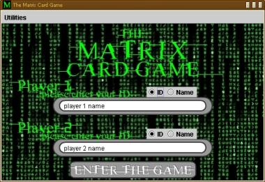
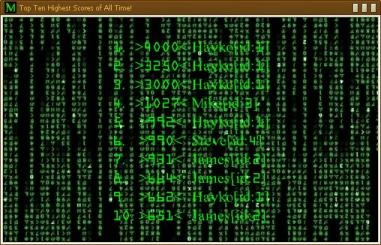
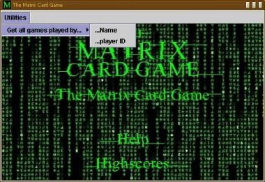
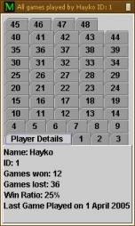

This mini manual is here to help you understand how the game works. At the start of the game, after pressing the "The Matrix Card Game" button you will be presented with the following screen which asks for player names.
|  |
If this is the first time you are playing this game, then select the "Name" radio button, and then type in a name to enter a new player into the game database. If you already have a player ID then leave the radio button on the ID selection and enter your player ID. Once both fields have been set, press the "Enter the Game" button to proceed. If you were creating a new player you will be informed of your new player ID.
How the game works...
The aim of the game is collect all the cards from your opponents deck. Once your opponent has no more cards left, the game ends. Alternatively, the game will finish if either player runs out of turns. If the game ends because of the former reason, the winner is the player who has all of the cards in their hand, but in the case of the latter, the player with the most points wins.
I order to win with either condition, each turn you are allowed to choose which attribute of your card you want to compare with your opponent's. Once you have chosen, the computer will compare both players' values and the winner will be the one with the highest attribute value. Say for example, your card had an attribute "Matrix Hacking" of 10, and your opponent had 7, and you chose to compare that attribute, you would win that hand. Every time a player wins, they get the opponent's card, and both that card and their own get tranferred to the bottom of their stack. This is so that you cannot keep on playing a strong card over and over again. Sometimes, the result of a comparison might be a draw, in which case, both cards will be left in a draw pile, and the next winner will get those cards.
You may come across a card which has a special ability. If this is the case, you wll have the option to use this action instead of comparing an attribute. If you choose to do so, you will use up your turn.
At the end of the game, you will be told who won, after which a highscore table will be displayed with the top ten scorers of all time. The program will end after this.
|  |
Helpful utilities...
When at the main menu, if you wish you can also find out information about a certain player. Use the utilites bar at the top to search either by player name or player id.
|  |
Depending on the size of the database this may take a while. When the program has finished it will display a menu like this showing the information in dialog. Click on the individual tabs to find out general details about the player as well as records of all the games they have ever played.
|  |
It's as simple as that!
Enjoy the game:)